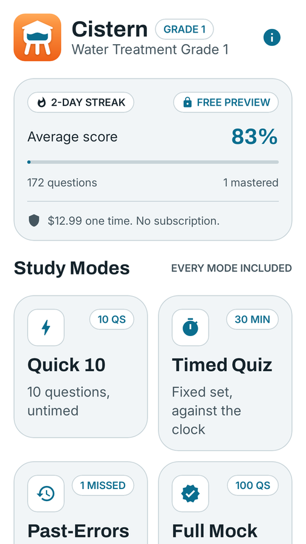
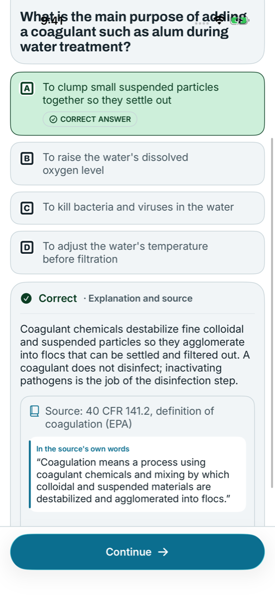
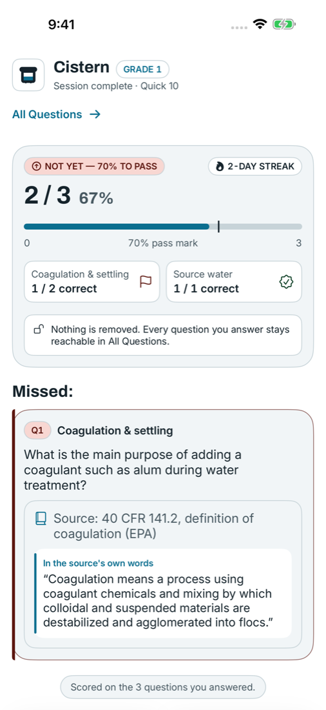

One Price, Once
$12.99, one time, no subscription. The best-known paid app charges $29.99–$49.99 for 6–12 months of access. The first three questions in every mode are free.
The $12.99 one-time, source-cited exam-prep app for entry-level Water Treatment Grade 1 operators who want every answer to show its source. 172 original questions, four study modes, offline, no account.
$12.99, one time, no subscription. The best-known paid app charges $29.99–$49.99 for 6–12 months of access. The first three questions in every mode are free.
Every question explanation cites its public source (EPA guidance, state study guides). Verify every answer yourself.
Built for iOS 26 with Liquid Glass, and for Android with Material 3. Dark Mode, large text and screen readers on both. No stale, flat chrome.



Cistern is built for water treatment operators preparing for a Water Treatment Grade 1 state certification exam. Every question shows the public source its answer rests on, so you can check it yourself.